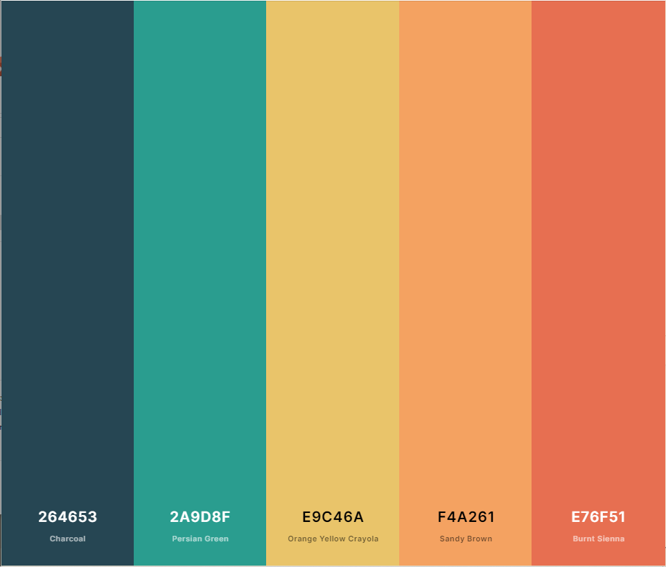

Color Scheme
To really make WeatheoryX stand out, I have selected a color swatch that has the appeal of the dry desert conditions which surround much of the mid-west, but also adding some of the cooler colors which can be experienced more frequently in the mountains. I knew I wanted to have a mix of blues and oranges to utilize the seperation of such on the color wheel. The oranges in their variety will be utilized in the header and site headings. The charcoal is used as a font color is utilized in the headings to stand out from the paragraphs. A white font is used in the paragraphs for better contrast.
 Link to the swatch at coolors.com